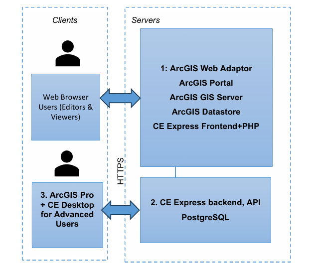
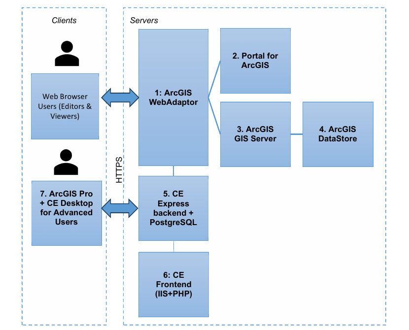

Requirements, architecture and prerequisites
This chapter is for system administrators who install, configure, and maintain a CE Express Server deployment. It covers the minimal hardware and software requirements, example deployment architectures, and the third-party components (ArcGIS, PostgreSQL, PHP) that must be prepared before installing CE Express.
Note: requirements can vary significantly, depending on acceptable calculation time, task complexity, and the size of the database.
Minimum hardware requirements
Processor (CPU)
| Level | Requirement |
|---|---|
| Minimum | 8 cores, hyperthreaded |
| Recommended | 16 cores |
| Optimal | 32 cores |
Optional requirements for GPU-accelerated calculations:
- GPU – any NVIDIA GPU with CUDA capabilities (developer.nvidia.com/cuda-gpus)
- Driver version: 456.38 or later
- CUDA Toolkit 11.0 to 12.4 (recommended)
Memory/RAM
| Level | Requirement |
|---|---|
| Minimum | 16 GB |
| Recommended | 32 GB |
| Optimal | 64 GB or more |
Storage
| Level | Requirement |
|---|---|
| Minimum | 500 GB to 1 TB of free space |
| Recommended | 2 TB or more of free space on a solid-state drive (SSD) |
Minimum requirements for software
Cellular Expert Express runs on Microsoft Windows Server 2016 or higher. It requires:
- ArcGIS Enterprise server 10.8.1 or later (11.5 supported), Standard or Advanced licence (Portal for ArcGIS included), with:
- ArcGIS DataStore
- WebAdapter for IIS to configure ArcGIS server
- WebAdapter for IIS to configure ArcGIS portal
- IIS webserver (or Apache server) with SSL enabled: required for ArcGIS server and CE Express
- PHP server for IIS (or for Apache server), version 8.5 or less
- SQL database management system PostgreSQL (download from my.esri.com)
- Microsoft Visual C++ 2015-202x for ESRI products
CE Express architecture examples
ArcGIS Enterprise & CE Server-Express: on-premises deployment (simplified)

Technical requirements:
1. Server for ArcGIS software — ArcGIS Web Adaptor, ArcGIS Portal, ArcGIS GIS Server, ArcGIS Data Store (see Esri documentation for each), plus the CE Frontend (it could be installed together with the CE Express backend):
| Resource | Minimum | Recommended | Optimal |
|---|---|---|---|
| CPU | 1 core | 8 cores | 16 cores |
| RAM | 8 GB | 16 GB | 32 GB |
| Storage | 500 GB free space | 2 TB (Note 1) | — |
2. CE Express — CPU: 32 cores, RAM: 64 GB, Storage: 1+ TB (Note 2)
3. ArcGIS Pro — CPU: 4 cores, RAM: 16 GB, Storage: 1 TB. Optional requirements for GPU-accelerated calculations: any NVIDIA GPU with CUDA capabilities, driver version 456.38 or later, CUDA Toolkit 11.0 to 12.
ArcGIS Enterprise & CE Server-Express: on-premises or cloud deployment

Technical requirements:
| # | Component | CPU | RAM | Storage |
|---|---|---|---|---|
| 1 | ArcGIS Web Adaptor | 1 core | 32 GB | 512 GB |
| 2 | ArcGIS Portal | 4 cores | 32 GB | 1 TB |
| 3 | ArcGIS GIS Server | 4 cores | 32 GB | 512 GB |
| 4 | ArcGIS Data Store | 1 core | 32 GB | 1+ TB (Note 1) |
| 5 | CE Server-Express | 16 cores | 64 GB | 1+ TB (Note 2) |
| 6 | CE Frontend (could be installed together with the ArcGIS Web Adaptor) | 1 core | 8 GB | 128 GB |
| 7 | ArcGIS Pro | 4 cores | 16 GB | 1 TB |
Note 1: ArcGIS Data Store shall contain the background maps, imaging, and other general GIS data. The required storage capacity is to be confirmed in consultation with the client and/or GIS data vendor.
Note 2: CE Server-Express shall store locally the GIS raster data (GeoTIFF) needed for calculations (DEM, DSM, DHM). The required storage capacity is to be confirmed in consultation with the client and/or GIS data vendor, and depends on the ultimate choice of GIS resolution: 0.2/0.5/1/2 m or lower. Likely some combination of resolutions may be logical (e.g. 1 m or below for urban/suburban areas, and 2 m or 5 m for rural), also possibly limiting the GIS data coverage to just the areas of interest.
Prerequisites
Before installing CE Express, prepare the following third-party components.
ArcGIS Server
Install ArcGIS for Server following the official installation guide: steps to get ArcGIS for Server up and running.
Use FQDN everywhere in the installation. ArcGIS Image Server is recommended but optional for publishing layers from CE Express.
PostgreSQL
Install PostgreSQL following the guide: installing PostgreSQL with the graphical installation wizard.
PHP server
The PHP server can be installed and configured under IIS or under an Apache server. If PHP will use an Apache server, Apache must be configured to use a different HTTP port if IIS is also installed.
Apache server — the easiest way to download and install Apache and PHP is to install WAMP: wampserver.aviatechno.net.
IIS server — download PHP from windows.php.net/download (installation instructions: php.net manual).
After installing PHP for IIS, check the php.ini file under the PHP installation folder (example C:\php). There may be two files, php.ini-development and php.ini-production. Copy one of them to php.ini, then edit the new php.ini to configure it for CE Inventory3D.
Create the following missing folders under C:\php:
temp(e.g.c:\php\temp)logssessions
PHP server configuration
Open the php.ini configuration file with a text editor.
If another DBMS will be used, enable the matching PHP extensions. For PostgreSQL:
extension=pdo_pgsql
extension=pgsql
Other parameters in php.ini to be changed and checked:
log_errors = on
error_log = "c:\php\logs\php_errors.log"
upload_tmp_dir = "c:\php\temp"
session.save_path = "c:\php\sessions"
upload_max_filesize = 1024M
post_max_size = 1024M
memory_limit = 512M
session.gc_maxlifetime = 86400
extension=bz2
extension=curl
extension=fileinfo
extension=gd
extension=mbstring
extension=exif
At the end of php.ini, add rows for the installed PHP version (example is for PHP 8.5):
[SG]
extension=ixed.8.5ts.win
The extension file should be provided in the installation package, in ceexp_db.zip. Copy ixed.8.5ts.win under c:\php\ext.
Important php.ini parameters that can affect Inventory3D usage:
- Parameters for the size of the files uploaded to the server, required for attachments:
ini upload_max_filesize = 1024M post_max_size = 1024M - The maximum amount of memory a script may consume:
memory_limit = 512M. This limit can affect the number of records — if a table has many records, increase the value. - The number of seconds after which session data is treated as "garbage" and potentially cleaned up. This should be larger than the Inventory3D configuration parameter
$sessionInactivityTimeout * 60in theconf.incfile:ini session.gc_maxlifetime = 43500
IIS configuration for PHP
If IIS is installed on the server, double-check that the CGI feature is installed. If it isn't:
- Open Server Manager and select Manage > Add roles and features.
- Select role Webserver (IIS) > Application Development, and check CGI.
- Click Install.
When the CGI role is installed, open IIS Manager and:
- Select Site > Handler Mappings > Add Module Mapping:
- Request Path —
*.php - Module — FastCGIModule
- Executable —
C:\php\php-cgi.exe - Name — PHP
- Click Request Restriction, select File or Folder, click OK.
- Click OK > Yes.
- Select Site > Default Documents > Add, and set
index.php. - Restart the IIS server.
Continue with Installation and server configuration.